Python 설치
파이썬을 처음 설치하는 분들에게 조금이나마 도움이 되었으면 하는 생각에 가이드 라인을 정리해서 글을 올려 봅니다.
1. 위 링크를 클릭하여 파이썬 다운로드 홈페이지로 접속 합니다.
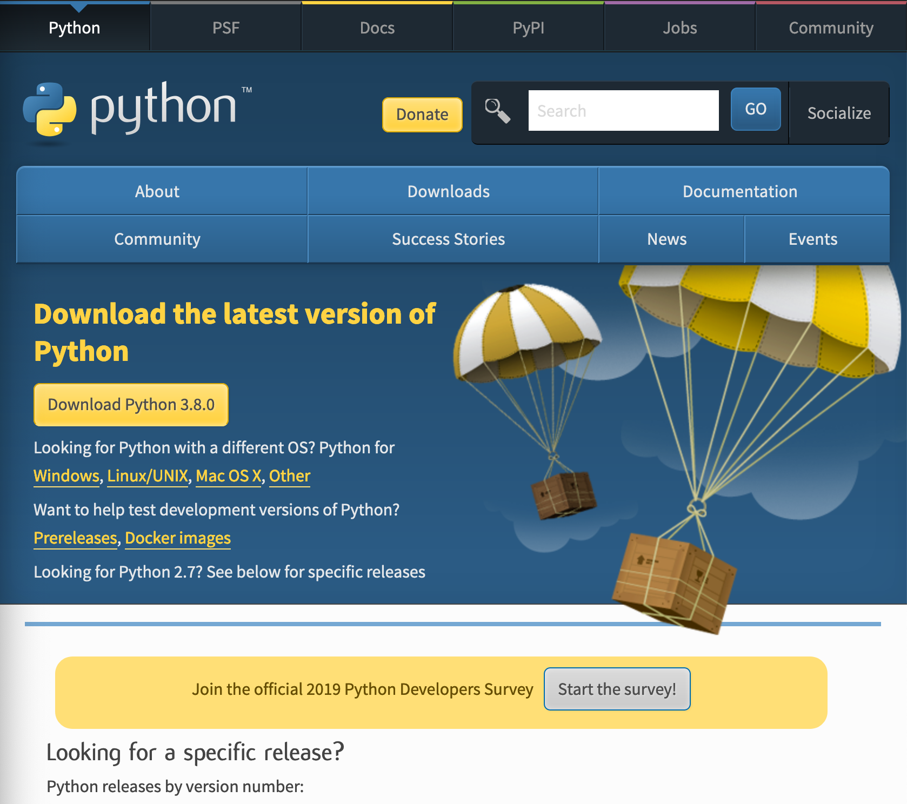2. 자신에게 필요한 파이썬 버젼(3.x.x)을 다운로드(Download 버튼 클릭)합니다.
(필자의 버젼은 3.7.4 입니다.)
3. 원하는 버전 다운로드 클릭 후 아래의 사진의 페이지로 페이지로 접속 하면 각 OS 버전에 맞게 파일을 설치 할 수 있습니다.
필자는 MAC 유저 이기 때문에(macOS 64-bit installer)를 설치합니다.
윈도우 유저분들은 Windows x86-64 executable installer 를 설치 하시면 됩니다.
4. 파일을 설치 후 실행 시키면 아래에 화면에서 꼭 PATH 체크를 하고 다음 단계로 진행 하길 바랍니다.(환경 변수를 추후에 설정하기 번거롭기 때문입니다.)
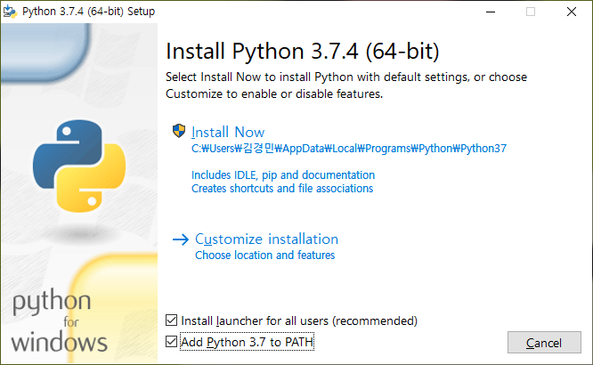 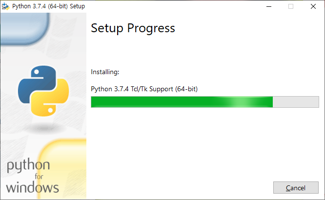5. 설치가 완료 되면 아래에 화면이 뜨면서 설치가 완료 됩니다.
Disable path length limit 를 클릭하여 path 설정의 길이 제한을 해제 합니다.
Python IDE 설치
파이썬을 편하게 사용할 수 있는 여러가지 툴이 있지만 이번에는 JetBrains 사의 PyCharm tool 을 설치 방법을 설명 하겠습니다.
1. 위 링크를 클릭하여 PyCharm 다운로드 홈페이지로 접속 합니다.
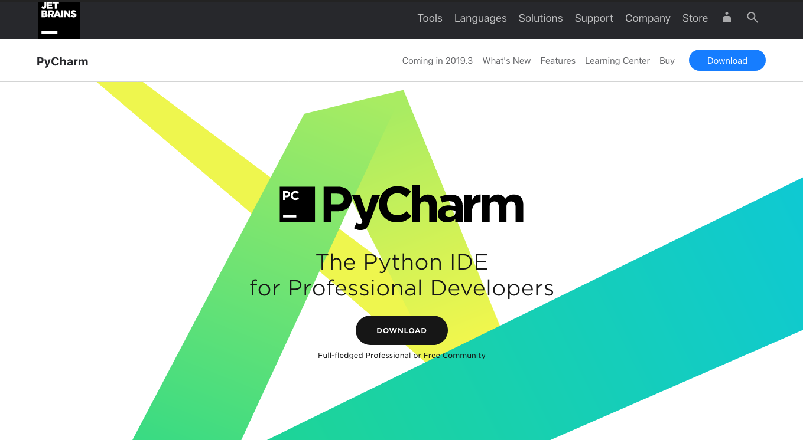2. 아래의 사진에 보이는 다운로드 버튼을 클릭해서 다운로드 페이지로 넘어 갑니다.
그 후 자신의 운영체제에 맞는 것을 선택하여 다운로드 합니다.
(Community 버젼을 이용하면 무료로 사용 가능합니다.)
3. 아래의 화면이 보여지면서 다운로드가 시작 됩니다.
* 이번 포스팅의 실행 파일은 윈도우 기준으로 작성 되었습니다.(Community Version) *
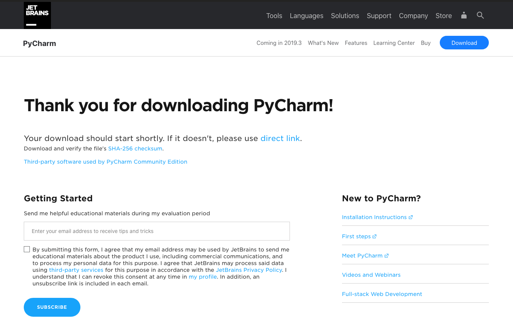4. 다운로드 된 파일을 클릭하면 아래와 같은 화면이 실행되면서 Next 버튼을 클릭 하시면 됩니다.
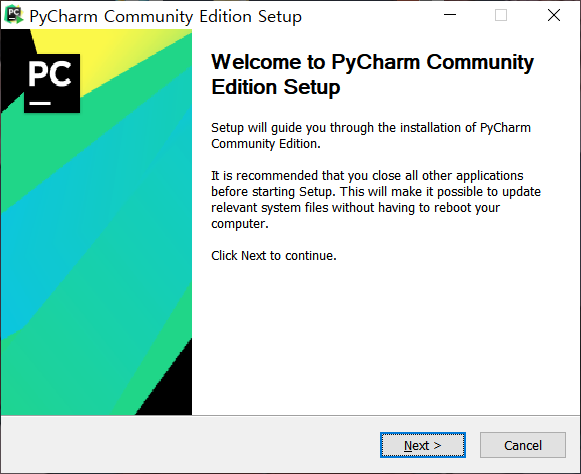5. 아래에 화면이 출력 되면 설정 되어있는 default 폴더 설정을 그대로 사용 한다고 선택 하신다면 Next 버튼을 클릭하시면 됩니다.
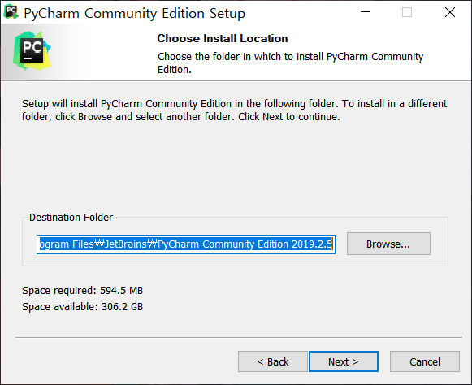6. 아래의 화면에서 모든 부분을 체크하고 Next 를 눌러 진행 하시기 바랍니다.
- Create Desktop Shortcut(64-bit launcher) - 64비트 런쳐 바로가기 생성
- Update context menu(Add "Open Folder as Project") - 오픈 프로젝트 폴더 생성
- Create Associations(.py) - 확장자 설정(Python file)
- Update PATH variable(restart needed) Add launchers dir to the PATH 파이참 환경변수 설정 업데이트(재시작 필요)
7. 시작 폴더를 설정 합니다 default(JetBrains) 설정 후 Next 버튼을 클릭하시면 됩니다.
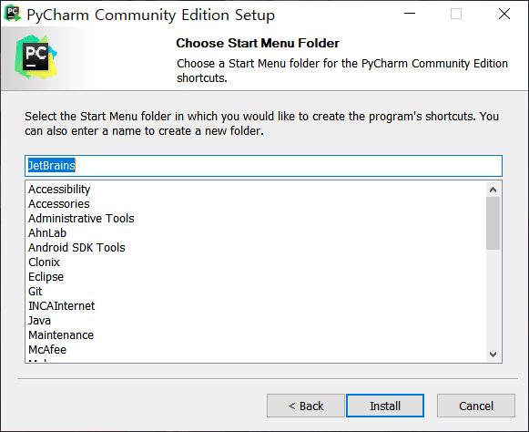8. 설치가 진행 됩니다.
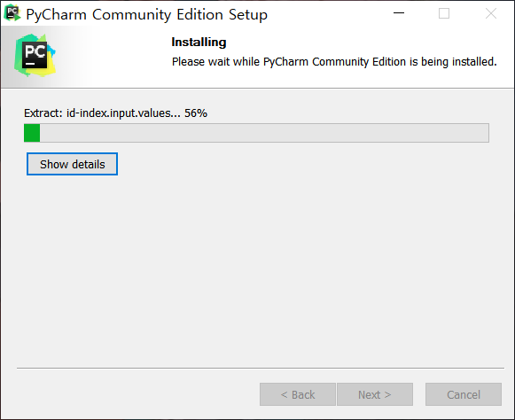9. 설치가 완료되면 Reboot now(지금 다시시작)
또는 I want to manually reboot later(나중에 다시 시작) 중 하나를 선택 후
Finish 버튼을 누르면 설치가 완료 됩니다.
Python Test
1. 설치된 Pycharm 을 실행 시켜서 잘 구동이 되는지 설정 해보겠습니다.
Pycharm 을 실행 시키면 아래와 같은 화면이 나오는데 지금은 import 된 폴더가 없으니
Do not import setting 으로 설정하고 OK 버튼을 누릅니다.
2. Jetbrains 사의 사용 동의를 요구하는 화면이니 동의하고 진행(continue) 하시면 됩니다.
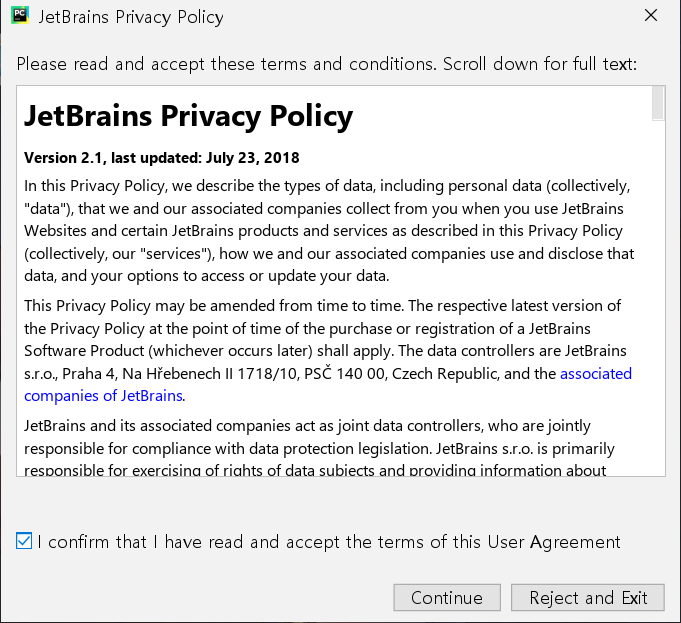3. 원하는 테마를 설정하고 Next 버튼을 클릭 합니다.
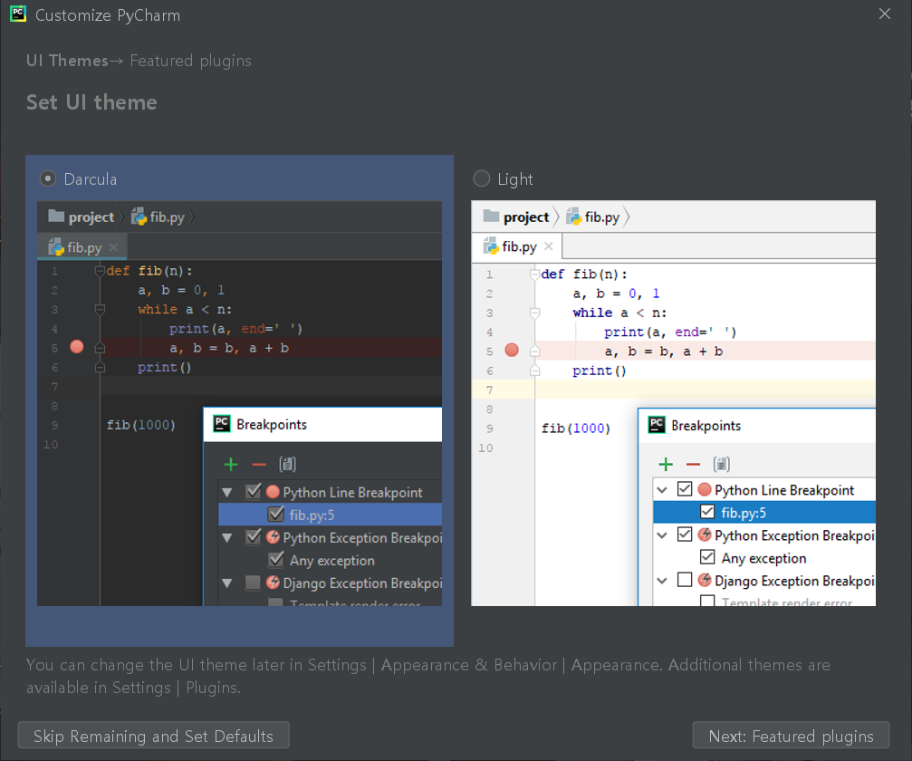4. 추가 플러그인 페이지 입니다. 현재 화면에서 Start using Pycharm 버튼을 눌러 줍니다.
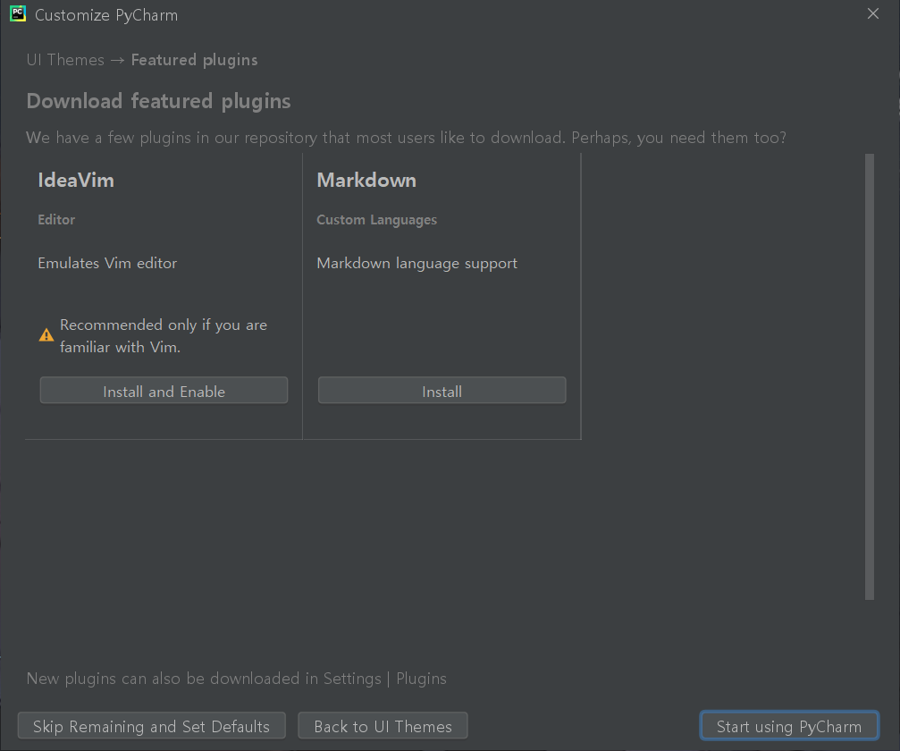5. Pycharm 설정이 다 끝나고 나면 아래의 화면이 나오는데 이 화면에서 Create New Project 를 클릭하여 새 프로젝트를 생성 합니다.
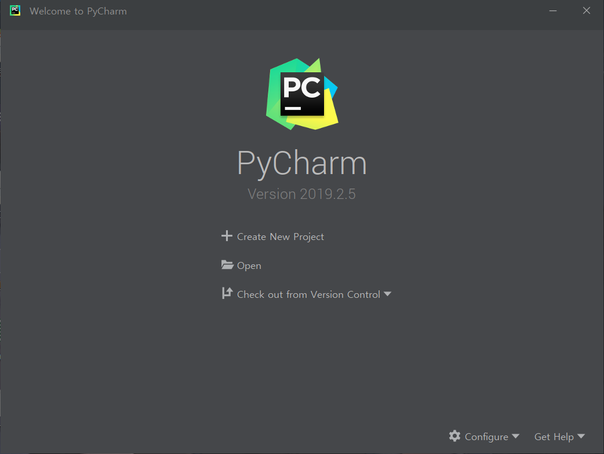6. 파이썬은 Interpreter 언어 이기 때문에 run 을 할 수 있는 파이썬을 직접 설정해야만 합니다.
아래의 화면에서 Location 은 프로젝트 경로를 이야기 합니다.
원하는 경로를 설정하고 untitled 를 원하는 프로젝트 이름으로 변경 합니다.
그 다음으로 Project Interpreter 삼각형 모양을 선택하면 아래의 화면이 출력됩니다.
그 후 Existing interpreter 를 체크하고 (...) 버튼을 클릭하여 설정을 시작합니다.
7. 아래의 화면에서 System Interpreter 를 선택하고 default로 설정되어 있는 경로를 그대로 OK 버튼을 눌러 줍니다.
그 후 다시 전으로 돌아와서 create 버튼을 눌러서 프로젝트를 생성 합니다.
8. 아래와 같은 창이 뜨면 본인이 설정한 폴더에 오른쪽 버튼을 클릭하여
New -> Python File 를 선택합니다.
9. 이름을 설정하고 Python file 을 선택하여 새로운 파이썬 파일을 생성 합니다.
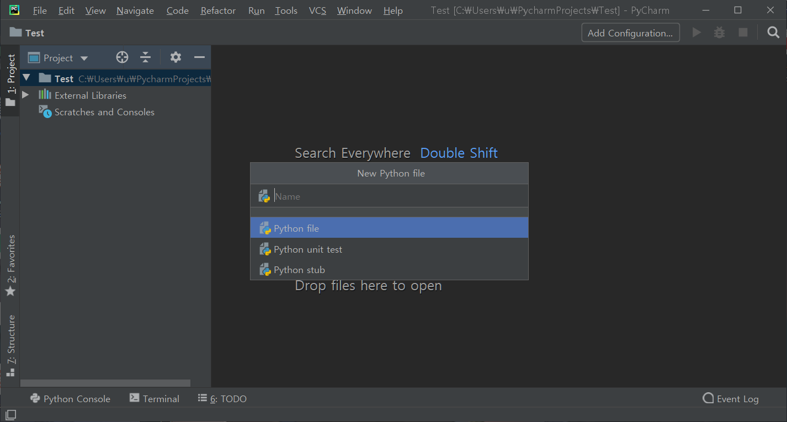10. 테스트 샘플 코드 입니다.
위 코드를 입력하여서 Run -> Run 누른 후 보여지는 화면에서 자신의 프로젝트와 같은 이름의 interpreter 를 선택하여 run 을 하게되면 아래와 같은 30 이 정확하게 출력이 되면 완료 됩니다.
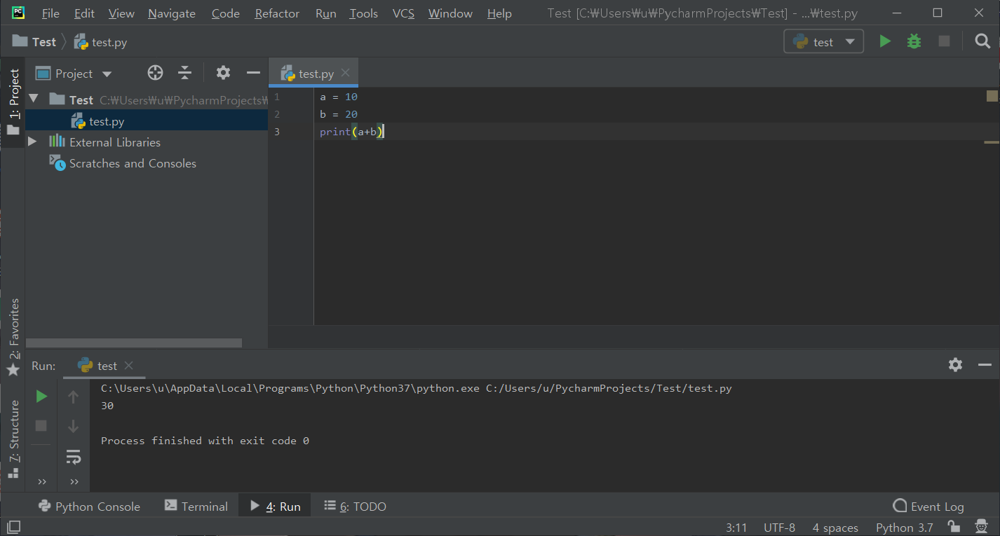포스팅을 마무리 하면서.
파이썬 설치와 파이선을 쉽게 편집할 수 있는 JetBrains 사의 Pycharm 에 대한 설치 방법에 대해서 포스팅 해보았습니다. 이 글을 참고 하셔서
성공적인 파이썬 개발 환경 셋팅이 되길 바랍니다.